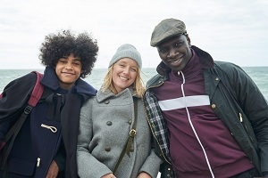
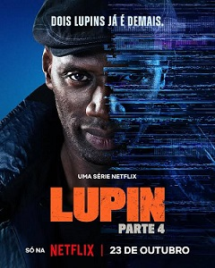

Lupin - A minha série preferida
Lupin é uma série de mistério, crime e aventura que acompanha as histórias de Assane Diop.
Sobre a série
A série Lupin é inspirada nas aventuras do famoso ladrão Arsène Lupin. O protagonista, Assane Diop, utiliza a sua inteligência e criatividade para resolver problemas e descobrir a verdade.
O que mais gosto na série
- Os mistérios e os enigmas.
- A inteligência de Assane Diop.
- As aventuras e as reviravoltas.
Alguns dos meus personagens favoritos
- Assane Diop, interpretado por Omar Sy, é o protagonista da série, um ladrão inspirado nas histórias do ladrão Arsène Lupin, que usa disfarces e inteligência para vingar o pai.
- Claire, ex-mulher de Assane e mãe do filho de ambos.
- Raoul, filho de Assane e Claire.
- J’Accuse é a carismática e leal cadela que torna-se uma companheira preciosa para Diop.
- Youssef Guédira, o detetive de polícia inteligente que é fã dos livros de Arsène Lupin e tenta rastrear Assane.

Imagem da série

Ver na Netflix